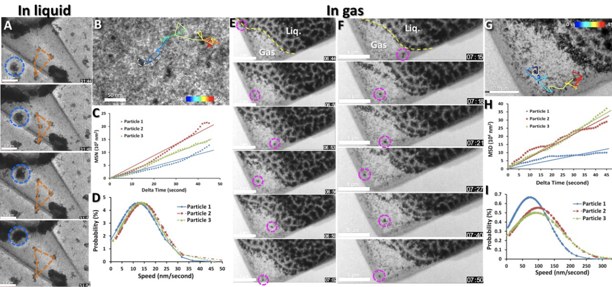
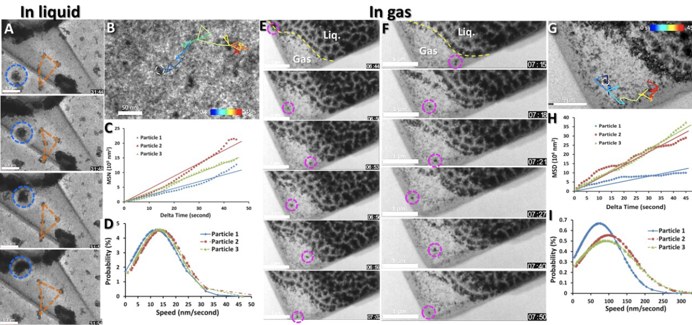
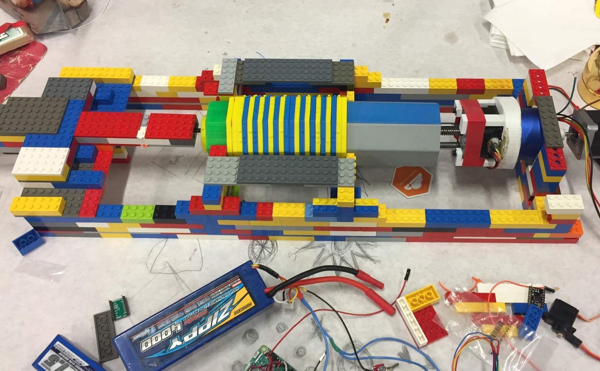
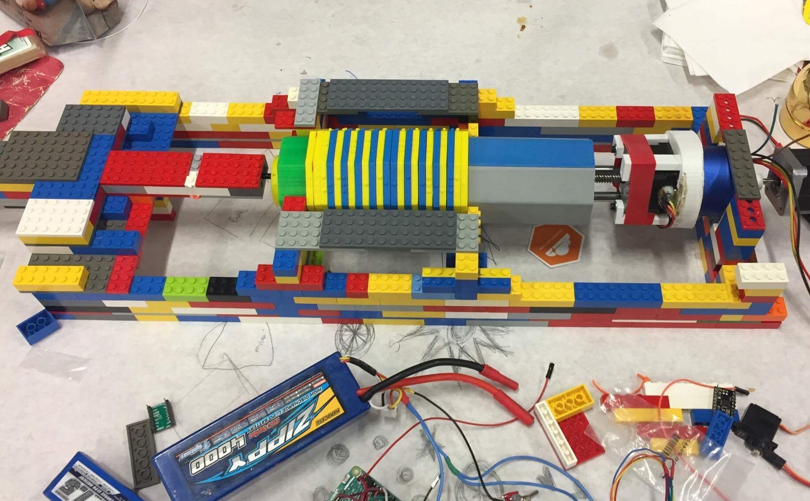
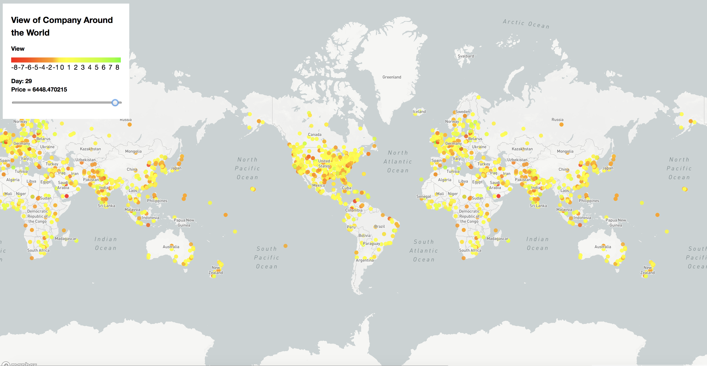
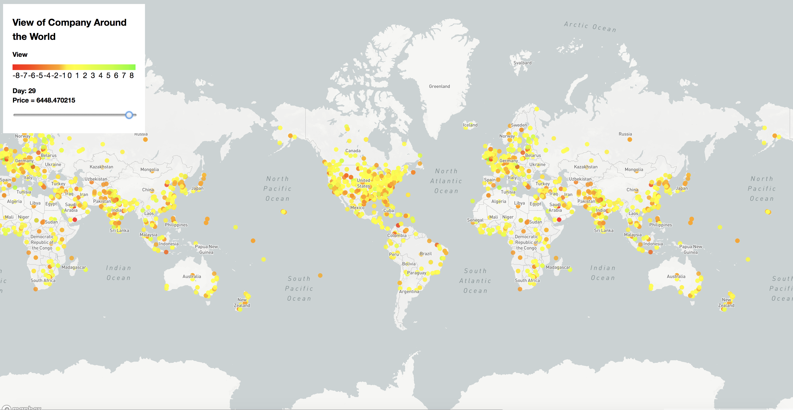

Projects
Home Projects
 
The first ever findings of a crystal structure inbetween the liquid gas interface and brownian motion observations in in liquid and gas.

The first ever findings of a crystal structure inbetween the liquid gas interface and brownian motion observations in in liquid and gas.
I started conducting nanoimaging research under the guidence of Dr. Gary Ren during the summer of 2014 at the Molecular Fundary at the Lawrence Berkeley National Laboratory. We developed a microchamger that allowed us to observe the first ever visualization of phase changes, the liquid gas interface, and brownian motion at the mesoscale. Using EMAN, I also analyzed phase and partical properties by tracking particle movement and calculating each particle's of mean square displacement, speed, acceleration, and forces causing its movement. Our work has been submitted to Nature and is now under review. I was also awarded as a Siemens Semifinalist for this project.
I started conducting research at the Sello Lab at Brown University in the begining of June 2017. I disrupted the peroxidase gene in Streptomyces (Mycobacterium tuberculosis model) bacteria through PCR Targeting and observed reduced bacterial resistance twoards cumene hydroperoxide stress, a naturally produced molecule by the immune system. Additionally, I have also disrupted the cyclic AMP gene in Streptomyces bacterial and conducted in vitro well microplate antimicrobial drug susceptibility tests via resazurin microtiter assay.
I joined the Sun Lab in the begining of September 2017 and began by syntehsizing monodisperse silver palladium and iron oxide nanoparticles for formic acid dehydrogenation. I am currently developing iron palladium nanoparticles for catalysis of dechlorination reactions, allowing it to be run at safe pressures and temperatures. To analyze the synthesized nanoparticles, I conduct organic reactions, testing their stability and catalytic ability, along with ICP spectroscopy, TEM, and X-Ray Diffraction to analyze their physical properties.

Testing of our first prototype, The Pursuit.
At the begining of 2017, I helped start Cloud Agronomics, a solar powered UAV and data acquisition company, using our slef designed solar UAV and proprietary imaging technology for real time agricultural mapping that can provide instant data on crop health. We are also aiming to break the world record for the longest flight of a UAV under 50 lb, currently held by AtlantikSolar at 81 hours. We are selected to to represent Brown University to compete for the Hult Prize at the Ivy league and northeast regional competition in the spring of 2018, awarded first runner up for the Startup Storm Global Business Plan Competition, and third in the Inaugural Penn Aerospace Pitch Competition. We have been awarded the Brown Maker Grant, Brown Explore Grant, and are working with the Institute at Brown for Environment and Society and are currently in a partnership with US Solar Works. We also currently have advisors at Brown, NASA, Boeing, and Stanford.
 
First prototype of Louis.
I created Louis, a visually impared assistant, that ouptus an analysis of one's immediate surrounding in braille. It uses a raspberry pi to take images of ones sarroundings. We take the analysis of these images and output them input into braille using the braille outputer I designed. It uses two stepper motors that can both traverse therough the braille blocks and also rotate them, creating a combination of letters and signals.
 
Hompage of NewsMap and projected news articles of Nasdaq around the world
At HackMIT, I helped develop NewsMap. NewsMap utilizes global market visualization software to provide a real-time visualization of news reports mentioning companies across the world in over 65 languages. By customizing the tone and geographic data from these news reports, NewsMap provides simple, easily understood, and interactive graphics, representing historical and up-to-date data, along with a company's stock and financial performance metrics. This allows companies to quickly get fast, and reliable data on their international digital footprint, empowering them to make strategic and rewarding decisions. NewsMap won the award for best data visualization at HackMIT. You can visit Newsmap here
Home Projects
Contact Information Eamil: david_lu@brown.edu
Mobile: (650) 307-8226
Brown University Department of Chemistry
69 Brown Street Box#9103
Providence RI 02912